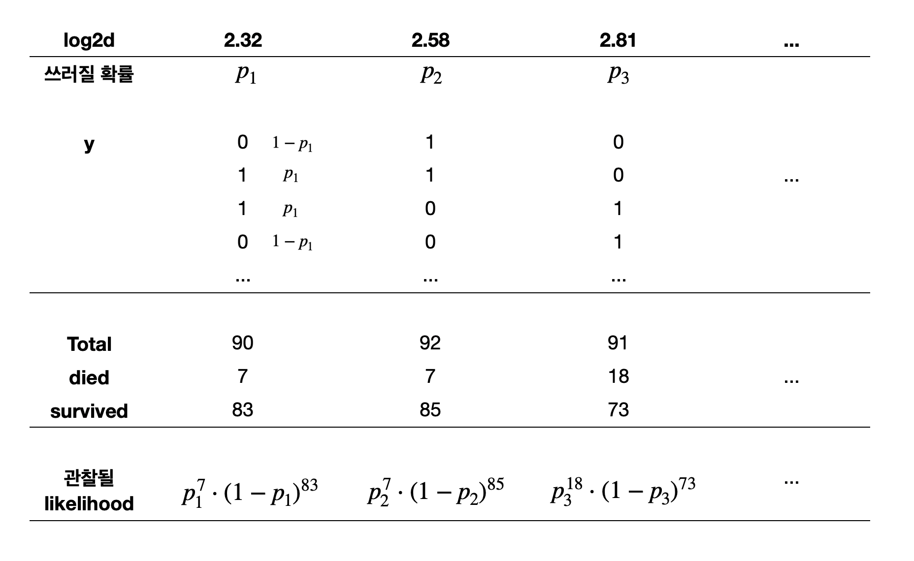

Logistic Regression
Response 변수가 binary로 두 개의 클래스에 속하는 경우; \(Y \in \{C_1, C_2\}\)
예제: Blowdownp.274, Applied Linear Regression (4e) by Sanford Weisberg
Data: blowdown2.csv
1999년 7월 4일, 미네소타 북동부의 바운더리 워터스 카누 지역 야생지대에 시속 90마일이 넘는 폭풍이 몰아쳐 숲에 심각한 피해를 입혔습니다. Rich 등(2007)은 이 지역에 대한 매우 광범위한 지상 조사를 통해 이 폭풍의 영향을 연구하여 3600여 그루의 나무의 생사 여부를 확인했습니다.
d: 나무의 지름(cm), y: 나무가 죽은 경우 1, 그렇지 않으면 0spp: 나무의 종, s: 특정 지역의 폭풍의 심각도
= pd.read_csv('data/blowdown2.csv' )# black spruce에 제한 = blowdown.query('spp == "black spruce"' )
d s y spp log2d
17 9.00 0.02 0 black spruce 3.17
24 11.00 0.03 0 black spruce 3.46
25 9.00 0.03 0 black spruce 3.17
... ... ... .. ... ...
3646 9.00 0.94 1 black spruce 3.17
3647 17.00 0.94 1 black spruce 4.09
3661 8.00 0.98 1 black spruce 3.00
[659 rows x 5 columns]
기존의 ordinary least squares (OLS) 방법으로 fit을 하면, (linear probability model)
Y; 1: event, 0: non-event
Mean funtion \(E(Y | X = x_i)\) 을 생각하면 각 나무의 두께에 해당하는 쓰러진 나무의 비율, 즉 확률값으로 해석할 수 있음.
code
= 'log2d' , y= 'y' )= .3 ), so.Jitter(y= .1 ))1 ))= (- 0.2 , 1.2 ))= so.Continuous().tick(at= [0 , 1 ]))= (6 , 3.5 ))= 'Log Diameter (cm)' , y= 'Died vs. Survived' , title= "Linear Fit" )= 'log2d' , y= 'y' , alpha= 0 , df_n= 6 )= .3 ), so.Jitter(y= .1 ))= (- 0.2 , 1.2 ))= so.Continuous().tick(at= [0 , 1 ]))= (6 , 3.5 ))= 'Log Diameter (cm)' , y= 'Died vs. Survived' , title= "Nonlinear Fit" )
Conditional distribution (근방에서)
code
'd < 15' )= blowbs['log2d' ].round (1 ))= 'y' )= "proportion" , common_norm= False ))"log2d" , wrap= 5 )= (8 , 4 ))= 'log d = {} ' .format )
Emperical probability/ Odds
이제 y를 직접 예측하기보다, 확률을 예측하는 방식을 취하면,
각 두께를 가진 나무들의 개수 (m)와
그 중에 태풍으로 죽은 나무의 수 (died)를 고려하면,
나무의 두께에 따라 죽은 나무 수의 비율 (p= died/m)을 계산할 수 있음. 이를 emperical probability라고 함.
사실, 이 p는 binary response (0, 1)의 conditional mean(평균)인데,
통계적으로 표현하면 \(E(Y|d=d_i)\) 이며 선형모형의 mean function를 제공.
= blowbs.groupby("d" )["y" ].agg([("died" , "sum" ), ("m" , "count" ), ("p" , "mean" )]).reset_index()
d died m p
0 5.00 7 90 0.08
1 6.00 7 92 0.08
2 7.00 18 91 0.20
.. ... ... .. ...
22 28.00 2 2 1.00
23 29.00 1 2 0.50
24 32.00 1 1 1.00
[25 rows x 4 columns]
code
= 'd' , y= 'p' )= 'm' )= .3 , color= ".6" ), so.Jitter(y= .1 ), x= blowbs.d, y= blowbs.y)# .add(so.Line(), so.PolyFit(5)) = "#87bc45" ), so.PolyFit(1 ))= (- 0.2 , 1.2 ))= (8 , 5 ))= 'Emperical Probability' , y = 'Proportion of Died' , x= 'Diameter (cm)' )
OLS estimate으로도 충분한가?
1차보다는 고차 다항함수로 fit한다면?
우선 d를 log2 변환해서 살펴보면,
code
"log2d" ] = np.log2(blowbs_bn["d" ])= 'log2d' , y= 'p' )= 'm' )= .3 , color= ".6" ), so.Jitter(y= .1 ), x= blowbs.log2d, y= blowbs.y)= "#87bc45" ), so.PolyFit(1 ))= (- 0.2 , 1.2 ))= (8 , 5 ))= 'Emperical Probability' , y = 'Proportion of Died' , x= 'Log of Diameter (cm)' )
위에서 살펴본 OLS의 문제들 즉,
잔차에 패턴이 보인다는 것은 충분히 좋은 모형이 아니라는 것을 의미하고,
예측값이 확률을 의미하지 못할 수 있음.
잔차의 분포도 Gaussian과는 거리가 멈.
이런 문제들을 해결하고 예측값이 분명한 “확률”의 의미를 품도록 여러 방식이 제시되는데 주로 사용되는 것이 logistic regression임.
Binary outcome을 예측하는 logistic regression 모형은 binary 값을 예측하는 것이 아니고, 확률 값을 예측하는 것임.
예를 들어, 두께가 5cm인 (특정 종의) 나무가 태풍에 쓰러질 확률(true probability)을 파악하고자 함.
이 때, 관측값은 5cm인 나무 중 쓰러진 나무의 “비율”이고, 이 관측치들로부터 true probability를 추정하고자 함.
Odds 의 정의: 실패할 확률 대비 성공할 확률의 비율
\(\displaystyle odds = \frac{P(Y = 1)}{P(Y = 0)} = \frac{p}{1-p}\)
예를 들어, 5cm 두께의 나무는 90그루 중 7그루가 죽었으므로 83그루는 살았음.\(\approx\) 1:12 이고 odds = 7/83 = 0.084; 생존할 가능성 대비 죽을 가능성이 8.4%임.\(odds = \frac{\frac{7}{90}}{1 - \frac{7}{90}} = \frac{7}{90-7} = \frac{7}{83}\)
확률과 odds, logit(log odds)의 관계
= blowbs_bn.assign(odds = lambda x: x.p / (1 - x.p))# p = 1인 경우 odds가 무한대가 되므로 편의상 inf 값을 50으로 대체 "odds" ] = blowbs_bn["odds" ].apply (lambda x: 50 if x == np.inf else x)
d died m p log2d odds
0 5.00 7 90 0.08 2.32 0.08
1 6.00 7 92 0.08 2.58 0.08
2 7.00 18 91 0.20 2.81 0.25
.. ... ... .. ... ... ...
22 28.00 2 2 1.00 4.81 50.00
23 29.00 1 2 0.50 4.86 1.00
24 32.00 1 1 1.00 5.00 50.00
[25 rows x 6 columns]
이 odds를 선형모형으로 나무두께로 예측하려고 하는 것인데, 예를 들어,
\(\widehat{odds} = b_0 + b_1 \cdot \log_{2} d\)
odds 값의 범위는 (0, \(\infty\) )이므로, 선형모형으로 fit하는 것이 적절하지 않음.\(-\infty\) , \(\infty\) )가 되어 선형모형으로 fit하는 것이 적절해짐.(또한, 가우시안 분포를 가정했을 때 최적임)
이 때, 예측모형은 log odds가 \(x\) 에 대해 선형적으로 연결된다고 가정하는 것임. 즉,
\(\displaystyle \log \widehat{odds} = \log\left(\frac{\hat{p}}{1-\hat{p}}\right) = b_0 + b_1 \cdot \log_{2} d\)
이를 logit 함수로 간단히 표현하면; 전통적 통계에서 선호\(\displaystyle logit(\hat p) = b_0 + b_1 \cdot \log_{2} d\) , \(\displaystyle logit(x) := \log\left(\frac{x}{1-x}\right)\)
logit의 역함수인 sigmoid 함수로 표현하면; machine learning에서 선호\(\displaystyle \hat p = \sigma(b_0 + b_1 \cdot \log_{2} d)\) , \(\displaystyle \sigma(x) := \frac{1}{1 + e^{-x}}\)
이를 확률로 표현하면,\(\displaystyle P(Y=1|X=x) = E(Y|X=x) = \sigma(b_0 + b_1 \cdot \log_{2} d)\)
즉, logit은 예측변수 \(x\) 와 선형적으로 연결되는데 반해, 확률 \(p\) 는 예측변수 \(x\) 와 비선형적 관계를 맺음
Mean function \(E(Y|X)\) 을 변형하는 방식으로 표현할 때,
\(f(E(Y|X))=\beta_0 + \beta_1 X_1 + \cdots + \beta_n X_n\)
이 때, \(f\) 를 link function이라고 하고,
여기서는 logit 함수를 link function으로 사용함.
Machine learning에서는, 그 역함수를 이용해 선형함수 쪽을 변형해 다음과 같이 표현하는데,
\(E(Y|X)=f(\beta_0 + \beta_1 X_1 + \cdots + \beta_n X_n)\)
이 때, \(f\) 를 activation function이라고 부름.
여기서는 sigmoid 함수를 activation function으로 사용함.
sigmoid 함수는 logisitic 함수라고도 부름.
한편, 각 클래스 내에서 \(X\) 가 multivariate Gaussian 분포를 따르고, 클래스 간에 covariance matrix가 동일하다고 가정하면,\(X\) 에 대해 선형적으로 연결된다는 것을 보일 수 있음.
여기서는 쓰러진 나무와 산 나무의 두께가 Gaussian 분포를 따르고,
그 두 분포의 분산이 동일하다면, log odds가 \(X\) 에 대해 선형적 연결될 수 있음.
나무의 두께(d)를 log2 변환한 이유임 (오른쪽 그림)
code
"label" ] = blowbs["y" ].map ({0 : "alive" , 1 : "died" })= 'd' , color= 'label' )= False ))#.scale(color=so.Nominal()) = ['#70e20c' , '#7d2be2' ])= (8 , 5 ))= "Diameter (cm)" , y= "Density" , color= "Label" )= 'log2d' , color= 'label' )= False ))= ['#70e20c' , '#7d2be2' ])= (8 , 5 ))= "Log of Diameter (cm)" , y= "Density" , color= "Label" )
이제, log odds을 구해, \(X\) 에 대해 선형적인 패턴이 있는지 확인해보면,
= blowbs_bn.assign(log_odds = lambda x: np.log(x.odds))
d died m p log2d odds log_odds
0 5.00 7 90 0.08 2.32 0.08 -2.47
1 6.00 7 92 0.08 2.58 0.08 -2.50
2 7.00 18 91 0.20 2.81 0.25 -1.40
.. ... ... .. ... ... ... ...
22 28.00 2 2 1.00 4.81 50.00 3.91
23 29.00 1 2 0.50 4.86 1.00 0.00
24 32.00 1 1 1.00 5.00 50.00 3.91
[25 rows x 7 columns]
관측값들과 emperical probability 와 log odds 을 함께 살펴보면,
code
= plt.subplots(1 , 1 , figsize= (10 , 6 ))= blowbs_bn.log2d, y= blowbs_bn.p, size= blowbs_bn.m, c= "#008fd5" , sizes= (20 , 200 ), ax= ax)def jitter(values, j):return values + np.random.normal(0 , j, values.shape)= blowbs.log2d, y= jitter(blowbs.y, 0.02 ), alpha= .3 , c= ".6" , ax= ax)for i, row in blowbs_bn.iterrows():f" { row. died:n} / { row. m:n} " , xy= (row.log2d, row.p), xytext= (row.log2d, row.p- 0.05 ), size= 9 )round (2 ))= 'x' , rotation= 45 )"Emperical Probability" )
Logit 값(분홍색)을 추가해서 그리면,
code
= plt.subplots(1 , 1 , figsize= (10 , 6 ))= blowbs_bn.log2d, y= blowbs_bn.p, size= blowbs_bn.m, sizes= (20 , 200 ), c= "#008fd5" , ax= ax, legend= False )= blowbs_bn.log2d, y= blowbs_bn.log_odds, size= blowbs_bn.m, sizes= (20 , 200 ), color= "#f46a9b" , ax= ax)def jitter(values, j):return values + np.random.normal(0 , j, values.shape)= blowbs.log2d, y= jitter(blowbs.y, 0.02 ), alpha= .3 , c= ".6" , ax= ax)for i, row in blowbs_bn.iterrows():f"logit { row. died:n} / { row. m:n} " , xy= (row.log2d, row.log_odds), xytext= (row.log2d, row.log_odds- 0.4 ), size= 9 )round (2 ))= 'x' , rotation= 45 )"P & Logit" )"Emperical Probability and Logit" )# # polyfit 5 # x = np.linspace(blowbs_bn.log2d.min(), blowbs_bn.log2d.max(), 100) # y = np.polyval(np.polyfit(blowbs_bn.log2d, blowbs_bn.log_odds, 5), x) # sns.lineplot(x=x, y=y, ax=ax, color=".6") # # polyfit 1 # y = np.polyval(np.polyfit(blowbs_bn.log2d, blowbs_bn.log_odds, 1), x) # sns.lineplot(x=x, y=y, ax=ax, color=".6")
위의 logit값을 선형모형으로 예측하는 모형: \(\displaystyle \log\left(\frac{\hat{p}}{1-\hat{p}}\right) = b_0 + b_1 \cdot \log_{2} d\)
파라미터 \(b_0, b_1\) 의 추정은 잔차들의 제곱의 합을 최소로 하는 OLS 방식은 부적절하며, 대신에 Maximum Likelihood Estimation을 사용함.
아이디어는 관측치가 전체적으로 관찰될 likelihood가 최대가 되도록 \(b_0, b_1\) 을 선택하는 것임
이를 위해서 적절한 확률모형을 결합시켜야 함.
선택하는 확률 모형은 Bernoulli 분포임; 평균 \(E(Y|X) = p\) 이고, \(logit(E(Y|X)) = b_0 + b_1 \cdot \log_{2} d\)
발생 비율값으로 변환해 Binomial distribution (이항분포)로 전개하는 방식도 있음; binomial logit model
관찰값은 Bernoulli 분포로부터 발생했다고 가정 함으로써, 실제 관찰값들이 관찰될 확률/가능도를 기준으로 파라미터를 추정할 수 있음.
"log2d" )
d s y spp log2d label
2102 5.00 0.45 0 black spruce 2.32 alive
724 5.00 0.18 0 black spruce 2.32 alive
723 5.00 0.18 1 black spruce 2.32 died
... ... ... .. ... ... ...
1784 29.00 0.38 1 black spruce 4.86 died
1079 29.00 0.25 0 black spruce 4.86 alive
3455 32.00 0.80 1 black spruce 5.00 died
[659 rows x 6 columns]

각 likelihood는 관측치들이 모두 독립 적으로 발생했다고 가정했을 때의 확률값이고,\(x_i\) (그에 대응하는 \(p_i\) )에 대해 관측치(\(y_i\) )가 관찰된 확률은 간결하게 다음과 같이 표현할 수 있음.
\[p_i^{y_i} (1-p_i)^{1-y_i}\]
\[\displaystyle \text{log likelihood}=\log \prod_{i=1}^{n}{P_i}=\sum_{i=1}^{n} y_i \cdot \log p_i + (1-y_i) \cdot \log(1-p_i)\]
모든 데이터가 관찰될 likelihood = \(p_1^7 (1-p_1)^{83} \cdot p_2^7 (1-p_2)^{85} \cdot p_3^{18} \cdot (1-p_3)^{73} \cdots\)
이 때, 모형을 예측변수 \(X\) 의 1차 다항함수로 fit한다면, \(\displaystyle \log\left(\frac{p_i}{1-p_i}\right) = \beta_0 + \beta_1 \cdot x_i\) 인데,\(\displaystyle p_i = \sigma(\beta_0 + \beta_1 x_i) = \frac{1}{1+e^{-(\beta_0 + \beta_1 \cdot x_i)}}\)
Likelihood = \(\displaystyle \left(\frac{1}{1+e^{-(\beta_0 + \beta_1 \cdot 2.32)}}\right)^7 \left(1 - \frac{1}{1+e^{-(\beta_0 + \beta_1 \cdot 2.32)}}\right)^{83} \cdot \left(\frac{1}{1+e^{-(\beta_0 + \beta_1 \cdot 2.58)}}\right)^7 \left(1 - \frac{1}{1+e^{-(\beta_0 + \beta_1 \cdot 2.58)}}\right)^{85} \cdots\)
이 Likelihood가 최대가 되도록 \(\beta_0, \beta_1\) 의 추정치를 찾음.
위의 Log likelihood = \(\displaystyle \sum_{i=1}^{n} y_i \cdot \log p_i + (1-y_i) \cdot \log(1-p_i)\) 는
머신러닝에서 손실함수로 사용되는 cross-entropy loss와 (거의) 동일함.
\(L = -\frac{1}{n} \sum_{i=1}^{n} y_i \cdot \log p_i + (1-y_i) \cdot \log (1-p_i)\)
첫 번째 항: \(\displaystyle \sum -y_i \cdot \log p_i = \sum y_i \cdot \log \frac{1}{p_i} = \sum y_i \cdot \log \frac{y_i}{p_i}= \sum \left(- y_i \cdot \log p_i - (-y_i \cdot \log y_i)\right)\)
앞서 Ridge, Lasso에서와 비슷한 원리로 OLS가 아닌 ML(maximum likelihood) estimator에 penalty를 적용하는 방식임.
에를 들어, Logistic regression with L2 regularization: 다음 손실함수를 최소화하도록 파라미터를 추정
\(\displaystyle L = \frac{1}{n} \left[ - \sum_{i=1}^{n} \left(y_i \cdot \log p_i + (1-y_i) \cdot \log(1-p_i)\right) + \frac{\lambda}{2} \sum_{j=1}^{p} \beta_j^2 \right]\)
import statsmodels.formula.api as smf= smf.logit('y ~ log2d' , data= blowbs).fit()print (mod.summary())
Optimization terminated successfully.
Current function value: 0.499165
Iterations 6
Logit Regression Results
==============================================================================
Dep. Variable: y No. Observations: 659
Model: Logit Df Residuals: 657
Method: MLE Df Model: 1
Date: Tue, 27 May 2025 Pseudo R-squ.: 0.2316
Time: 23:59:25 Log-Likelihood: -328.95
converged: True LL-Null: -428.10
Covariance Type: nonrobust LLR p-value: 4.888e-45
==============================================================================
coef std err z P>|z| [0.025 0.975]
------------------------------------------------------------------------------
Intercept -7.8162 0.628 -12.437 0.000 -9.048 -6.584
log2d 2.2408 0.190 11.773 0.000 1.868 2.614
==============================================================================
Scikit-learn의 LogisticRegression()은 디폴트로 \(l2\) regularization을 사용함: 참고 문서
우선, train-test split을 통해 데이터를 나눈 후, LogisticRegression()을 적용하면,
from sklearn.model_selection import train_test_splitfrom sklearn.linear_model import LogisticRegression= blowbs[['log2d' ]]= blowbs['y' ]= train_test_split(X, y, test_size= 0.5 , random_state= 0 )= LogisticRegression(penalty= None ) # l1, l2 regularization 가능 print (lr.coef_, lr.intercept_)# [[2.08]] [-7.26] # As a DataFrame with column names = pd.DataFrame({"coef" : lr.coef_[0 ], "name" : X.columns})# coef name # 0 2.08 log2d
위 fitted model의 예측값들
code
= plt.subplots(1 , 1 , figsize= (9 , 5 ))= blowbs_bn.log2d, y= blowbs_bn.p, size= blowbs_bn.m, c= "#008fd5" , sizes= (20 , 200 ), ax= ax)def jitter(values, j):return values + np.random.normal(0 , j, values.shape)= blowbs.log2d, y= jitter(blowbs.y, 0.02 ), alpha= .3 , c= ".6" , ax= ax)for i, row in blowbs_bn.iterrows():f" { row. died:n} / { row. m:n} " , xy= (row.log2d, row.p), xytext= (row.log2d, row.p- 0.05 ), size= 9 )round (2 ))# x-axis with 45 degree rotation = 'x' , rotation= 45 )# fitted line = blowbs.log2d, y= mod.predict(blowbs["log2d" ]), ax= ax, color= "#87bc45" )
Prediction Values
예측값
Logistic regression에서는 세 가지 타입의 예측값들이 있음.
Predicted probability: \(\displaystyle \hat{p} = \frac{1}{1+e^{-(b_0 + b_1 \cdot x)}}\)
Odds: \(\displaystyle odds = \frac{\hat{p}}{1 - \hat{p}} = e^{b_0 + b_1 \cdot x}\) , Odds ratio: \(\displaystyle \frac{odds_1}{odds_2} = e^{b_1 \cdot (x_1 - x_2)}\)
Log odds: \(\displaystyle logit = b_0 + b_1 \cdot x\)
이 확률값을 이용해 binary outcome인 클래스를 예측할 수 있음.
# using statsmodels package, not scikit-learn = blowbs.assign(= mod.predict(blowbs["log2d" ]),= lambda x: x.pred_prob / (1 - x.pred_prob),= lambda x: mod.predict(blowbs["log2d" ], which= "linear" )1 :]
s y spp log2d label pred_prob pred_odds pred_logit
17 0.02 0 black spruce 3.17 alive 0.33 0.49 -0.71
24 0.03 0 black spruce 3.46 alive 0.48 0.94 -0.06
25 0.03 0 black spruce 3.17 alive 0.33 0.49 -0.71
... ... .. ... ... ... ... ... ...
3646 0.94 1 black spruce 3.17 died 0.33 0.49 -0.71
3647 0.94 1 black spruce 4.09 died 0.79 3.83 1.34
3661 0.98 1 black spruce 3.00 died 0.25 0.33 -1.09
[659 rows x 8 columns]
예를 들어, 두께(log2d)가 3인 나무의 경우,
Probabiliy: 태풍에 쓰러질 확률은 25%로 예측되며,
Odds: 태풍에 쓰러지지 않을 가능성 대비 쓰러질 가능성의 비율은 1:0.33이므로 대략 3:1로 예측됨. 즉 다시 말하면, 1 그루가 쓰러진다면 3 그루는 쓰러지지 않을 것으로 예측함.
Odds가 1이면 event의 확률(p)이 0.5
Odds가 1보다 작으면 event의 확률(p)이 0.5보다 작고,
Odds가 1보다 크면 event의 확률(p)이 0.5보다 큼.
Log odds (logit): 확률 p의 [0, 1]의 값을 무한한 값으로 늘려 linearly fit할 수 있게 함.
Odds의 비율 (odds ratio, OR) 을 통해 해석
\(\displaystyle odds: \frac{\hat{p}}{1 - \hat{p}} = e^{b_0 + b_1 \cdot x}=e^{b_0}\cdot e^{b_1 \cdot x}\) 로부터
\(x\) 가 1 증가할 때 odds의 비율: \(\displaystyle odds ~ratio: \frac{\frac{\hat{p_2}}{1 - \hat{p_2}}}{\frac{\hat{p_1}}{1 - \hat{p_1}}} = e^{b_1 \cdot (x+1) - b_1 \cdot x} = e^{b_1}\)
즉, \(x\) 가 1 증가하면, odds가 “몇 배”로 증가하는지를 나타냄.
따라서, odds ratio가 1보다 크면 (\(b_1\) 이 양수) \(x\) 가 1 증가할 때, event의 odds가 커지며,
odds ratio가 1보다 작으면 (\(b_1\) 이 음수) event의 odds가 줄어듬.
위의 경우, \(\displaystyle \widehat{odds} = e^{-7.82 + 2.24 \cdot log_2(d)}\) 이므로 odds ratio = \(e^{2.24} = 9.4\)
해석하면, 나무의 두께가 (log2 scale로) 1 늘어남 (2배 증가)에 따라 태풍에 나무가 쓰러질 odds가 9.4배 증가함
다시 말하면, 나무의 두께가 (log2 scale로) 1 늘어남 (2배 증가)에 따라 태풍에 나무가 쓰러지지 않을 가능성 대비 쓰러질 가능성이 9.4배 증가함.
나무의 두께 (원래 d)로 말하면, 두께가 10% 두꺼워지면, \(e^{2.24 \cdot log_2(1.1)}=1.36\) 배, 즉 odds가 36% 증가함.
\(b_0\) : d = 1일 때의 odds이므로 \(\displaystyle e^{-7.82 + 2.34 \cdot 0} = e^{-7.82} = 0.004\) , 즉 두께가 1cm 일 때 태풍에 나무가 쓰러지지 않을 가능성 대비 쓰러질 가능성은 0.004임.
Scikit-learn의 LogisticRegression()은 디폴트로 \(l2\) regularization을 사용함: 참고 문서
from sklearn.model_selection import train_test_splitfrom sklearn.linear_model import LogisticRegression= blowbs[['log2d' ]]= blowbs['y' ]= train_test_split(X, y, test_size= 0.5 , random_state= 0 )= LogisticRegression(penalty= None ) # l1, l2 regularization 가능 # predict_proba: 각 클래스에 대한 확률을 반환 # predict: 예측된 클래스를 반환 (threshold=0.5) = X_test.assign(= y_test,= lr.predict_proba(X_test)[:, 1 ], # 확률값 = lr.predict(X_test), # 클래스 = lambda x: x.pred_prob / (1 - x.pred_prob), # odds = lambda x: np.log(x.pred_odds), # log odds 5 )# log2d y pred_prob pred_class pred_odds pred_logit # 2890 3.46 1 0.48 0 0.94 -0.07 # 574 3.81 0 0.66 1 1.93 0.66 # 96 3.17 0 0.34 0 0.51 -0.67 # 2773 3.46 1 0.48 0 0.94 -0.07 # 1813 3.58 1 0.55 1 1.21 0.19
Predictive Accuracy
모형의 예측 정확성
분류 문제의 경우, 보통 두 단계를 거쳐 예측
Inference: 클래스에 속할 확률을 추정; 확률을 추정하지 않는 알고리즘도 있음.
Decision: 추정된 확률을 기반으로 클래스를 결정
기본적으로 0.5 이상이면 1로, 그렇지 않으면 0으로 분류
Threshold를 조정해 분류를 조정할 수 있음
예를 들어, 확실한 경우(p > 0.8 )에만 1로 분류
애매한 확률 구간의 경우 결정을 유보할 수 있음; reject option
이 때, 모형의 예측 정확성을 평가하는 두 가지 방식이 있음.
확률 대한 예측 정확성 (evaluating predicted probability)
클래스에 대한 예측 정확성 (evaluating predicted class)
Evaluation of predicted probability
이제 이 모형이 좋은 모형인지 살펴보기 위해 residual, 잔차를 살펴볼 수 있는가?
Pearson residual: \(\displaystyle \frac{y_i - \hat{p}_i}{\sqrt{\hat{p}_i (1-\hat{p}_i)}}\)
Deviance residual: \(\displaystyle sign(y_i - \hat{p}_i) \sqrt{-2[y_i \log\hat{p}_i + (1-y_i) \log(1-\hat{p}_i)]}\)
Deviance를 이용해 OLS에서의 \(R^2\) 와 비슷한 개념을 구성: Pseudo R-squared
Model deviance, \(D = -2[\log likelihood - \log likelihood_{\text{perfect}})]\)
Perfect model의 likelihood: 1
Null deviance: 절편만 있는 모형의 deviance; 856.2073760911842
Pseudo R-squared: \(\displaystyle \frac{Null~Deviance - Deviance}{Null~Deviance}\)
Cox-Snell’s Pseudo R-squared
Nagelkerke’s Pseudo R-squared
“Coefficient of discrimination” (Tjur, 2009): average \(\hat{p}\) when \(y=1\) - average \(\hat{p}\) when \(y=0\)
클래스별 예측 확률의 분포/히스토그램
code
"y2" ] = test_pred["y" ].map ({0 : "survived (y=0)" , 1 : "died (y=1)" })= 'pred_prob' )= "#ef9b20" ), so.Hist(bins= 12 ))"y2" )= "Predicted Probability" , y= "Count" )= (7 , 4 ))
각 (확률 값의) bin에 포함되는 관측치의 실제 값(\(y \in \{0, 1\}\) )의 비율을 계산해 시각화
code
from sklearn.calibration import calibration_curve# 3. calibration_curve로 실제 비율 계산 = calibration_curve("y" ], test_pred["pred_prob" ], n_bins= 10 , strategy= "uniform" = prob_pred, y= prob_true)= "o" , color= "#f46a9b" ))= ".3" , linestyle= ":" ), y= prob_pred)= so.Continuous().tick(at= np.linspace(0 , 1 , 11 )))= "(10-Binned) Predicted Probability" ,= "Observed Event Percentage \n (Emperical Probability)" ,= "Calibration Plot" ,= (5 , 4.5 ))
Evaluation of predicted class
예측된 확률을 기반으로 binary outcome/class으로 예측하여, 모형의 예측력을 평가
예측된 확률값에 대해 임계치를 정하여, 예를 들어 0.5보다 크면 1, 0.5보다 작으면 0으로 분류하여, 이 binary 예측값과 실제값을 비교하여, 예측력을 평가
Confusion matrix
ROC curve
Threshold: 0.5인 경우, accuracy rate: 0.78
survied(0)
died(1)
survied(0)
203
54
died(1)
19
54
survied(0)
died(1)
survied(0)
True Negative
False Positive
died(1)
False Negative
True Positive
다른 threshold를 적용하면,
Threshold: 0.1인 경우,
survied(0)
died(1)
survied(0)
42
4
died(1)
180
104
Accuracy rate: 0.44
Threshold: 0.9인 경우
survied(0)
died(1)
survied(0)
222
104
died(1)
0
4
Accuracy rate: 0.68
code
from sklearn.metrics import accuracy_scorefrom ISLP import confusion_table# cutoff = 0.5 = confusion_table(test_pred["pred_class" ], test_pred["y" ])= accuracy_score(test_pred["y" ], test_pred["pred_class" ])print (f"Accuracy rate: { score:.2f} " )# cutoff = 0.1 = confusion_table(test_pred["pred_prob" ] > 0.1 , test_pred["y" ])= accuracy_score(test_pred["y" ], test_pred["pred_prob" ] > 0.1 )print (f"Accuracy rate: { score:.2f} " )# cutoff = 0.9 = confusion_table(test_pred["pred_prob" ] > 0.9 , test_pred["y" ])= accuracy_score(test_pred["y" ], test_pred["pred_prob" ] > 0.9 )print (f"Accuracy rate: { score:.2f} " )
분류모형의 성능을 평가하기 위한 여러 지표들
Precision & Recall
Precision (정밀도): \(\hat{y}=1\) 일 때, \(y=1\) 일 확률
시스템이 스팸으로 분류한 이메일 중 실제 스팸인 이메일의 비율
높은 precision은 스팸으로 잘못 분류된 정상 이메일이 적다는 것을 의미
하지만, 스팸 이메일이 정상 이메일함에 나타날 수 있음.
정보검색에서 반환된 문서들 중 실제로 관련 있는 문서의 비율
높은 precision은 사용자가 검색 결과에서 불필요한 정보를 적게 얻고, 대부분 유용한 정보를 얻는다는 것을 의미
하지만, 관련은 있지만 놓친 정보는 많을 수 있음.
검색 결과의 정확도를 평가
검사를 통해 암으로 진단받은 사람이 실제로 암을 가지고 있을 확률
높은 precision은 암 진단을 받은 사람에게 잘못된 암 진단을 내리지 않는 것을 의미
Recall (재현율): \(y=1\) 일 때, \(\hat{y}=1\) 일 확률
실제 스팸 이메일 중에서 시스템이 스팸으로 올바르게 분류한 비율
높은 recall은 대부분의 스팸 이메일이 정확히 스팸으로 분류된다는 것을 의미
하지만, 정상 이메일이 스팸함으로 분류될 수 있음.
정보검색에서 관련 문서들 중에서 실제로 시스템이 반환한 문서의 비율
높은 recall은 사용자가 찾고자 하는 모든 관련 정보를 검색 결과에서 얻을 수 있다는 것을 의미
하지만, 관련 없는 정보도 많이 포함될 수 있음.
검색 시스템의 탐색 능력을 평가
실제로 암을 가진 사람 중에서 검사를 통해 암으로 진단받은 사람의 비율
높은 recall은 암 환자를 놓치지 않고 모두 찾아낸다는 것을 의미
참 양성, true positive rate (TPR), 또는 sensitivity라고도 함
precision & recall trade-off : 이 둘 사이에는 종종 상충 관계가 있음. Precision을 높이기 위해 예측 확률에 대한 더 엄격한 기준을 사용하면 recall이 낮아질 수 있고, 반대로 recall을 높이기 위해 더 느슨한 기준을 사용하면 precision이 낮아질 수 있음.
정보 검색의 맥락: precision을 높여 사용자가 불필요한 정보를 받지 않게 해주며, recall을 높여 필요한 정보를 놓치지 않도록 함.
스팸 필터링의 맥락: precision을 높여 자주 스팸 메일함을 확인하지 않아도 되도록 하며, recall을 높여 대부분의 스팸 이메일이 차단되어 정상 메일함에서 보이지 않도록 쾌적한 환경을 제공할 수 있음.
Sensitivity & specificity
특히, 이상치 탐지라든가 희귀 질병 진단 등 불균형 데이터셋에서는 precision & recall이 더 유용할 수 있음.
Sensitivity (민감도): \(y=1\) 일 때, \(\hat{y}=1\) 일 확률
Recall, true positive rate (TPR)
높은 민감도는 질병이 있는 사람을 놓치지 않고 모두 찾아내는 것(참 양성)을 의미
Specificity (특이도): \(y=0\) 일 때, \(\hat{y}=0\) 일 확률
True negative rate (TNR)
실제로 질병이 없는 사람을 얼마나 잘 (질병이 없다고) 식별하는지(참 음성)를 나타냄
높은 특이도는 질병이 없는 사람에게 질병이 있다고 잘못 진단하지 않는 것을 의미함.
희귀 질병을 진단하는 경우, 정상인(negative)을 올바로 식별하는 것은 매우 쉽기 때문에 질병이 없는 사람에 대한 판별력이 과대추정될 수 있음; precision이 더 유용할 수 있음.
1 - FPR (False Positive Rate; false alarm)
0, 1을 바꿨을 때의 즉, 0을 기준으로 했을 때의 recall
특이도가 높은 테스트라면 질병이 없다는 판정은 신뢰할 만함. 즉, 0(음성)을 기준으로한 sensitivity가 높은 것이 됨.
거짓 음성 비율: False negative rate (FNR); \(y=1\) 일 때, \(\hat{y}=0\) 일 확률: 1 - sensitivity
거짓 양성 비율: False positive rate (FPR) 또는 False alarm; \(y=0\) 일 때, \(\hat{y}=1\) 일 확률: 1 - specificity
위의 confusion matrix로부터 지표들을 계산하면,
Threshold: 0.1인 경우,
survied(0)
died(1)
survied(0)
42
4
died(1)
180
104
Threshold: 0.9인 경우
survied(0)
died(1)
survied(0)
222
104
died(1)
0
4
recall = 104 / (4 + 104) = 0.96
precision = 104 / (180 + 104) = 0.37
specificity = 42 / (42 + 180) = 0.19
accuracy = (42 + 104) / (42 + 4 + 180 + 104) = 0.44
recall = 4 / (4 + 104) = 0.04
precision = 4 / (0 + 4) = 1.00
specificity = 222 / (222 + 0) = 1.00
accuracy = (222 + 4) / (222 + 104 + 0 + 4) = 0.68
Receiver operating characteristic (ROC) curve
예측된 확률에 대한 임계치를 조정함에 따라 옳은 예측과 틀린 예측의 비율이 어떻게 달라지는지 살펴봄으로써 임계치를 설정하는데 도움을 줌
잘못된 예측에 대한 비용이 다르다면, 특정 임계치를 선택하는 것을 고려해야 함
code
from sklearn.metrics import roc_curve= roc_curve(test_pred.y, test_pred.pred_prob)= pd.DataFrame("thresholds" : thresholds.round (2 ),"False Pos" : fpr,"sensitivity(TPR)" : tpr,"specificity(TNR)" : 1 - fpr"thresholds" ).head(10 )## ROC curve # 위에서 얻은 roc 데이터을 사용하여 그리거나 # RocCurveDisplay를 이용 from sklearn.metrics import RocCurveDisplay= RocCurveDisplay(fpr= fpr, tpr= tpr).plot()# scikit-learn의 visualization 문서 참조 # https://scikit-learn.org/stable/visualizations.html
code
from sklearn.metrics import precision_recall_curve= precision_recall_curve(test_pred.y, = pd.DataFrame("thresholds" : np.append(thresholds.round (2 ), 1 ),"precision" : precision,"recall" : recall,"f1-score" : 2 * precision * recall / (precision + recall)"recall > 0.1" )"thresholds" ).head(10 )# precision-recall curve # 위에서 얻은 pr 데이터을 사용하여 그리거나 # PrecisionRecallDisplay를 이용 from sklearn.metrics import PrecisionRecallDisplay= PrecisionRecallDisplay(precision= precision, recall= recall).plot()# scikit-learn의 visualization 문서 참조 # https://scikit-learn.org/stable/visualizations.html
위에서 언급한 클래스 불균형의 예들: 이상치 탐지, 희귀 질병 진단 등에서는 precision & recall이 더 유용할 수 있음.
code
from sklearn.datasets import make_classificationfrom sklearn.model_selection import train_test_splitfrom sklearn.ensemble import RandomForestClassifierfrom sklearn.linear_model import LogisticRegressionfrom sklearn.metrics import roc_curve, auc, precision_recall_curve, average_precision_score# Create an imbalanced dataset = make_classification(n_samples= 10000 , n_features= 20 , n_classes= 2 ,= [0.97 , 0.03 ], random_state= 42 )# Split the dataset into training and testing sets = train_test_split(X, y, test_size= 0.3 , random_state= 42 )# Train a random forest classifier = RandomForestClassifier(n_estimators= 100 , random_state= 42 )# Get the probability scores for the testing set = clf.predict_proba(X_test)[:, 1 ]## 혹은 logistic regression # lr = LogisticRegression() # y_score = lr.predict_proba(X_test)[:, 1] # Calculate the ROC curve = roc_curve(y_test, y_score)= 1 - fpr= auc(fpr, tpr)# Calculate the Precision-Recall curve = precision_recall_curve(y_test, y_score)= average_precision_score(y_test, y_score)# Plot the ROC curve = (11 , 10 ), dpi= 80 )2 ,2 ,1 )= '#87bc45' , lw= 2 , label= 'AUC = %0.2f ' % roc_auc)1 , 0 ], [0 , 1 ], color= 'k' , lw= 1 , linestyle= '-' )0.0 , 1.02 ])0.0 , 1.02 ])'Specificity' )'Sensitivity' )'Sensitivity-Specificity Curve' )= "lower left" )# Plot the Precision-Recall curve 2 ,2 ,2 )= '#87bc45' , lw= 2 , label= 'AUC = %0.2f ' % pr_auc)0.0 , 1.02 ])0.0 , 1.02 ])'Recall' )'Precision' )'Precision-Recall Curve' )= "lower left" )= pd.DataFrame({"fpr" : fpr, "tpr" : tpr, "spc" : spc, "th" : th})= pd.DataFrame({"precision" : precision, "recall" : recall, "th" : np.append(th2, 1 )})= df1.merge(df2)2 ,2 ,4 )"spc" ], df_merge["precision" ], color= '#00A08A' , lw= 2 )"recall" ], df_merge["precision" ], color= '#87bc45' , lw= 2 )0.0 , 1.02 ])0.0 , 1.02 ])'Precision' )'Specificity/Recall' )"Specificity" , "Recall" ])
Classifier의 전체적 성능에 대한 지표
ROC curve:
AUC: Area Under the Curve = Concordance Index
각 specificity값에 대한 sensitivity의 합; 모형(classifier) 대한 전반적 평가
0.5: random guess, 1: perfect prediction
Concordance Index(c-index): 모든 서로 다른 클래스의 Y쌍, 예를 들어 \((0_i, 1_j)\) 에 대해서 해당하는 예측된 확률의 크기가 \(p_i < p_j\) 인 비율, 즉 순서가 맞는(concordance) 비율
위 blowdown 데이터셋 대한 모형의 AUC, concordance index 계산
from sklearn.metrics import roc_auc_score, auc= roc_auc_score(test_pred.y, test_pred.pred_prob)print (f"AUC: { roc_auc:.2f} " ) # 또는 auc(fpr, tpr)
AUC: 0.81
def concordance(y, pred_prob):= 0 = 0 = pd.DataFrame({"y" : y, "pred_prob" : pred_prob})for idx, case in test_pred.iterrows():= test_pred[test_pred.index != idx]# 같은 케이스 제외 = other_cases[case["y" ] != other_cases["y" ]]+= ("y" ] - df["y" ] > 0 ) == (case["pred_prob" ] - df["pred_prob" ] > 0 )sum ()+= len (df)return concord / totalprint (f"Concordance index: { concordance(test_pred.y, test_pred.pred_prob):.2f} " )
Concordance index: 0.81
Precision-recall:
Average precision: the area under the precision-recall curve
from sklearn.metrics import average_precision_score= average_precision_score(test_pred.y, test_pred.pred_prob)print (f"Average Precision: { average_precision:.2f} " )
Average Precision: 0.68
The classification report in scikit-learn Thershold: 0.4인 경우,
code
from sklearn.metrics import classification_report, recall_score= .4 = test_pred["pred_prob" ] >= thresholdprint (classification_report(test_pred["y" ], pred_class))
precision recall f1-score support
0 0.86 0.82 0.84 222
1 0.66 0.73 0.69 108
accuracy 0.79 330
macro avg 0.76 0.77 0.77 330
weighted avg 0.80 0.79 0.79 330
specificity for positive = recall for negative: 0.82
macro avg of recall: sensitivity와 specificity의 평균: 0.77
F1-score = \(\displaystyle \left(\frac{\text{precision}^{-1} + \text{recall}^{-1}}{2}\right)^{-1}\)
Precision과 recall의 조화평균
보수적인 지표임. 즉, precision과 recall 중 하나라도 낮으면 F1-score도 낮아짐
Classifier로서 전반적인 모형의 성능 vs. 특정 임계치에서의 모형의 성능 vs. 확률모형
Classifier로서 전반적인 모형의 성능: AUC 등
비용을 고려한 특정 임계치에서의 모형의 성능
잘못된 예측에 대한 비용이 다르다면, 임계치를 조정하여, 잘못된 예측에 대한 비용을 줄일 수 있음
만약, 농작물에 대한 피해라고 가정하면,
Costs: 농작물 피해, 펜스 설치비, 노동력 등
Benefits: 수확물의 가치
거짓 음성을 낮춰야 하는 경우: 예를 들어, 농작물의 작은 피해도 심각한 결과를 초래하는 경우
거짓 양성을 낮춰야 하는 경우: 예를 들어, 농작물의 피해 예방을 위한 비용이 큰 경우
만약, 와인 셀러가 와인의 품질(high:양성 vs. low:음성)을 성분들로 예측하는 모형을 만든다면, (in Stefanie Molin ’s book)
Costs: 높은 품질의 와인을 낮은 품질로 예측하면, 와인 품평가에게 신뢰를 잃을 수 있음
Benefits: 낮은 품질의 와인을 높은 품질로 예측하면, 낮은 품질의 와인을 높은 가격에 팔아 수익으로 이어질 수 있음
거짓 음성을 낮춰야 하는 경우: 예를 들어, 영세한 와이너리가 수익이 중요한 경우
거짓 양성을 낮춰야 하는 경우: 예를 들어, 고품질의 와인을 생산하는 것으로 유명한 와이너리; 네임밸류를 유지하기 위해. 반면, 비싼 와인이 싸게 팔리는 것은 감당할 수 있음.
확률모형: 확률을 정확히 예측하는 모형의 추구;
확률값 혹은 확률 분포(Bayesian 접근)로 communicate
Decision maker는 당사자
Decision Boundary
앞선, Log odds(logit): \(\displaystyle log\left(\frac{\hat{p}}{1 - \hat{p}}\right) = b_0 + b_1 \cdot X\)
Log odds(logit): \(\displaystyle log\left(\frac{\hat{p}}{1 - \hat{p}}\right) = b_0 + b_1 \cdot X_1 + b_2 \cdot X_2\)
또는 \(\displaystyle \hat p = \sigma(b_0 + b_1 \cdot X_1 + b_2 \cdot X_2)\) , \(\displaystyle \sigma := \frac{1}{1 + e^{-x}}\)
왼편의 logit 함수(또는 sigmoid 함수)는 증가함수이므로, threshold를 정하면 선형 결정 경계(decision boundary)가 나타남: hyperplane
비선형 함수로 모형을 세우면, decision boundary가 비선형으로 나타남.
예를 들어, \(b_0 + b_1 \cdot X + b_2 \cdot X^2\) 등
밑은 두 예측변수 \(X_1= log2d\) (diameter)와 \(X_2=s\) (severity)로 나무가 쓰러질지 여부를 선형함수로 만들었을 때의 decision boundary (threshold=0.5)\(\displaystyle log\left(\frac{\hat{p}}{1 - \hat{p}}\right) = b_0 + b_1 \cdot X_1 + b_2 \cdot X_2\)
BodyM Dataset
AWS: BodyM Dataset
2,779명 대상으로 8,324장의 정면 및 측면 실루엣 사진과 키, 몸무게, 그리고 14가지 신체 측정치 제공
인종 분포: 백인 40%, 아시아인 30%, 흑인/아프리카계 미국인 14%, 아메리카 원주민 또는 알래스카 원주민 1%, 기타 15%(히스패닉 15%)
\(Y\) = 성별,\(X_1\) = 키(height), \(X_2\) = 어깨 너비(shoulder-breath)에 대한 2차항을 포함한 선형함수로 모형을 세웠을 때의 decision boundary
Basis Functions
기저 함수
관측치(input vector) \(\mathbf{x}\) 에 대해, basis function \(\phi(\mathbf{x})\) 를 사용하여, 비선형 모형을 선형모형의 형태로 변환(파라미터에 대한 선형)
\[\mathbf{y} = b_0 + b_1 \cdot \phi_1(\mathbf{x}) + b_2 \cdot \phi_2(\mathbf{x}) + ... + b_n \cdot \phi_{m-1}(\mathbf{x})\]
예를 들어, 두 예측변수의 관측치 \(\mathbf{x} = (x_1, x_2) = (log2d, s)\) (각각 diameter와 severity)에 대해서 모든 2차항을 추가한다면
\[\phi_i(\mathbf{x}): \mathbb{R}^2 \to \mathbb{R}\]
where \(\phi_1(\mathbf{x}) = x_1, ~ \phi_2(\mathbf{x}) = x_2, ~ \phi_3(\mathbf{x}) = x_1^2, ~ \phi_4(\mathbf{x}) = x_1 \cdot x_2, ~ \phi_5(\mathbf{x}) = x_2^2\)
즉, 5개의 예측 변수가 생성: \(x_1, x_2, x_1^2, ~ x_1 \cdot x_2, ~x_2^2\)
이는 2차원 예측변수 공간을 5차원으로 확장하는 것과 같음: \((x_1, x_2) \rightarrow (\phi_1, \phi_2, \phi_3, \phi_4, \phi_5)\)
이는 Kernel trick과 유사함: 고차원으로 변환하여 선형모형을 적용하는 것
Feature engineering의 일종임. Deep learning에서는 연구자가 직접 만들기보다는 모형이 학습할 수 있도록 함.
code
# 2차식을 추가 from sklearn.preprocessing import PolynomialFeaturesfrom sklearn.linear_model import LogisticRegressionfrom ISLP import confusion_tablefrom sklearn.metrics import accuracy_score= PolynomialFeatures(degree= 2 )= poly.fit_transform(X_train)= poly.transform(X_test)= LogisticRegression(penalty= None , max_iter= 1000 )= lr_poly.fit(X_train_poly, y_train)= X_test.assign(= y_test,= lr_blowsdn_poly.predict_proba(X_test_poly)[:, 1 ], # 확률값 = lr_blowsdn_poly.predict(X_test_poly), # 클래스 # cutoff = 0.5 = confusion_table(test_pred["pred_class" ], test_pred["y" ])= accuracy_score(test_pred["y" ], test_pred["pred_class" ])
Figure 1: Logistic Regression Decision Boundary with Kernel Tricks
선형모형은 basis function을 고려하면 간단한 neural network(신경망)으로 볼 수 있음.
자주 사용되는 basis function
Polynomial basis: \(\phi_i(x) = \mathbf{x}^i\)
Gaussian (Radial) basis: \(\displaystyle \phi_i(\mathbf{x}) = \exp\left(-\frac{||\mathbf{x} - \mu_i||^2}{2 s^2}\right)\)
Sigmoidal basis: \(\displaystyle \phi_i(\mathbf{x}) = \sigma\left(\frac{||\mathbf{x} - \mu_i||}{s}\right)\) , \(\displaystyle \sigma(x) = \frac{1}{1 + e^{-x}}\)
다른 모형에서도 유연하게 비슷한 아이디어를 적용할 수 있음.
가령, KNN에서 이웃하는 데이터들 간의 거리를 고려해서 확률을 계산할 수 있음.
즉, Gaussian의 분포에 비례하여 근접한 이웃에 더 큰 가중치를 부여함.
KNN with Gaussian kernel
def gaussian_kernel(distances, sigma= 1 ):"""Calculates Gaussian kernel weights.""" return np.exp(- distances** 2 / (2 * sigma** 2 ))# Create KNN classifier with custom weights = KNeighborsClassifier(n_neighbors= 10 , weights= lambda x: gaussian_kernel(x, sigma= 1 ))
Neural Network/Deep Learning
앞서 Gaussian basis (radial basis) function (RBF)과 같은 방식으로 비선형 모형 변환이 유용하나, 계산량이 많고, 과적합을 방지하기 위한 조심스러운 정규화가 필요함.
또는, Support Vector Machine (SVM)도 비슷하게 basis function을 이용해 비선형 모형을 만드나, 확률적 출력을 제공하지 않고 다중 클래스의 일반화가 어려움.
RBF 및 SVM 같은 모델은 최근에는 deep learning에 의해 대체되고 있음.
대규모 데이터셋을 효과적으로 활용 가능.
깊은 계층 구조의 표현을 학습하여 복잡한 예측 문제에서 높은 정확도 달성.
FIGURE 10.1. Neural network with a single hidden layer. The hidden layer computes activations \(A_k = h_k(X)\) that are nonlinear transformations of linear combinations of the inputs \(X1, X2, . . . , Xp\) . Hence these \(A_k\) are not directly observed. The functions \(h_k(\cdot)\) are not fixed in advance, but are learned during the training of the network. The output layer is a linear model that uses these activations \(A_k\) as inputs, resulting in a function \(f(X)\) .
Activation functions. The piecewise-linear ReLU function is popular for its efficiency and computability. We have scaled it down by a factor of five for ease of comparison.
Hidden layers: \(A_k = g(w_{k0} + w_{k1}X_1 + w_{k2}X_2 + w_{k3}X_3 + w_{k4}X_4)\)
\(g\) 는 activation function으로 logistic에서처럼 sigmoid나 현대적으로는 ReLU를 사용
각 \(A_k\) 가 1에 가까우면 firing, 0에 가까우면 silent한다고 마치 뇌의 뉴런이 신호가 전달되는 것에 비유
\(Y(X) = \beta_0 + \beta_1 A_1 + \beta_2 A_2 + \cdots + \beta_5 A_5\)
The handwritten digit recognition example
1980년대 후반 숫자를 인식하는 문제가 신경망 기술의 발전에 큰 촉매로 작용했음.
신경망의 구조의 개선을 거쳐 인간 수준의 성능을 달성하는데 30년 이상 걸렸음.
아래 28x28 pixels의 음영을 나타내는 0~255(8bit) 값을 입력값으로 받음.
60,000개의 training set을 이용하여 학습
인풋 레이어의 유닛(unit)의 수: 28x28 = 784개 (예측변수의 수)
각각의 hidden layer의 유닛의 수는 256개, 128개
총 파라미터의 수는 235,146개; 예측변수보다 월등히 많음
한편 multinomial logistic으로 필요한 파라미터의 수는 785x9 = 7,065개
Source: An Introduction to Statistical Learning (2e)
Convolutional Deep Belief Networks: Hierarchical Representations
Source: p.301, Deep Learning: Foundations and Concepts by Bishop, C. M. & Bishop, H
Multiclass (K > 2)
Multinomial logistic regression
클래스 \(C_k\) 에 속할 확률을 예측하는 모형: Base 클래스를 기준으로 나머지 클래스에 대한 확률을 예측\(\displaystyle P(Y=1|X=x) = \frac{1}{1+e^{-(b_0 + b_1 \cdot x)}}=\frac{e^{b_0 + b_1 \cdot x}}{1 + e^{b_0 + b_1 \cdot x}}\) 을 다음과 같이 확장할 수 있음.
\(\displaystyle P(Y=C_k|X=x) = \frac{e^{\beta_{k0} + \beta_{k1} \cdot x}}{1 + \sum_{j=1}^{K-1} e^{\beta_{j0} + \beta_{j1} \cdot x}}, ~~ k = 1, 2, ..., K-1\) \(k=K\) (Base 클래스)의 경우 \(\displaystyle P(Y=C_K|X=x) = \frac{1}{1 + \sum_{j=1}^{K-1} e^{\beta_{j0} + \beta_{j1} \cdot x}}\)
이 때, 마지막 클래스 \(C_K\) 에 대한 클래스 \(C_k\) 의 비율은 다음과 같이 나타남.
\(\displaystyle log\left(\frac{P(Y=C_k|X=x)}{P(Y=C_K|X=x)}\right) = \beta_{k0} + \beta_{k1} \cdot x\)
이는 binary경우 \(log(odds)\) 인 \(\displaystyle log\left(\frac{\hat{p}}{1 - \hat{p}}\right) = b_0 + b_1 \cdot x\) 의 확장으로 볼 수 있음.
Machine learning에서는 주로 base 클래스 없이 모든 클래스에 대한 확률을 예측:
Softmax coding: \(\displaystyle P(Y=C_k|X=x) = \frac{e^{\beta_{k0} + \beta_{k1} \cdot x}}{\sum_{j=1}^{K} e^{\beta_{j0} + \beta_{j1} \cdot x}}\)
두 클래스 \(C_k\) 와 \(C_{k'}\) 의 사이의 확률의 비율은
\(\displaystyle log\left(\frac{P(Y=C_k|X=x)}{P(Y=C_{k'}|X=x)}\right) = (\beta_{k0} - \beta_{k'0}) + (\beta_{k1} - \beta_{k'1}) \cdot x\)
Blowdown data
가령, 나무의 종(9 species)을 분류하는 문제를 생각해보면,log2d), 쓰러졌는지 여부(y), 피해 심각도(s)로 9개의 종에 대한 확률을 예측하는 모형을 만들 수 있음.
Load data
# Multinomial logistic regression = pd.read_csv('data/blowdown2.csv' )= blowdown.drop(columns= ["spp" , "d" ])= blowdown["spp" ] # classify the species
0
9.00
0.02
0
balsam fir
3.17
1
14.00
0.02
0
balsam fir
3.81
2
18.00
0.02
0
balsam fir
4.17
...
...
...
...
...
...
3663
19.00
0.98
1
jackpine
4.25
3664
37.00
0.98
1
black ash
5.21
3665
48.00
0.98
1
black ash
5.58
3666 rows × 5 columns
# split the data into training and test sets = train_test_split(X, y, test_size= 0.5 , random_state= 0 , stratify= y)= LogisticRegression(max_iter= 1000 );
Predicted probability
= 15 # predicted probability = pd.DataFrame(lr.predict_proba(X_test), columns= lr.classes_)= y_test).reset_index(drop= True ), test_pred_prob], axis= 1 # 데이터셋 병합
0
0.61
1
4.58
paper birch
0.29
0.00
0.02
0.04
0.24
0.02
0.33
0.01
0.04
1
0.26
0
4.32
cedar
0.14
0.02
0.01
0.05
0.20
0.26
0.11
0.04
0.18
2
0.86
1
5.17
aspen
0.42
0.00
0.09
0.01
0.10
0.01
0.34
0.00
0.02
...
...
...
...
...
...
...
...
...
...
...
...
...
...
1830
0.09
0
3.70
cedar
0.05
0.05
0.00
0.13
0.25
0.22
0.05
0.05
0.20
1831
0.41
1
3.32
black spruce
0.05
0.01
0.00
0.33
0.44
0.02
0.06
0.02
0.06
1832
0.20
0
3.00
cedar
0.01
0.05
0.00
0.31
0.24
0.12
0.01
0.06
0.21
1833 rows × 13 columns
Predicted class
# prediction = X_test.assign(= y_test,= lr.predict(X_test),= lr.predict_proba(X_test).max (axis= 1 ),
2811
0.61
1
4.58
paper birch
paper birch
0.33
1105
0.26
0
4.32
cedar
jackpine
0.26
3566
0.86
1
5.17
aspen
aspen
0.42
...
...
...
...
...
...
...
255
0.09
0
3.70
cedar
cedar
0.25
1934
0.41
1
3.32
black spruce
cedar
0.44
816
0.20
0
3.00
cedar
black spruce
0.31
1833 rows × 6 columns
# confusion matrix "pred_class" ], test_pred["y" ])
Predicted
aspen
38
0
6
0
7
12
30
0
7
balsam fir
0
0
0
0
0
0
0
0
0
black ash
2
0
1
0
0
0
0
0
0
black spruce
8
19
0
189
88
41
0
13
74
cedar
63
7
0
111
278
46
79
25
76
jackpine
21
4
0
8
47
45
24
11
28
paper birch
80
0
18
4
27
11
114
1
11
red maple
0
0
0
0
0
0
0
0
0
red pine
6
7
0
17
38
23
4
12
52
Precision, Recall: one-versus-all(rest)
# classification report: one-versus-all print (classification_report(test_pred["y" ], test_pred["pred_class" ]))
precision recall f1-score support
aspen 0.38 0.17 0.24 218
balsam fir 0.00 0.00 0.00 37
black ash 0.33 0.04 0.07 25
black spruce 0.44 0.57 0.50 329
cedar 0.41 0.57 0.48 485
jackpine 0.24 0.25 0.25 178
paper birch 0.43 0.45 0.44 251
red maple 0.00 0.00 0.00 62
red pine 0.33 0.21 0.26 248
accuracy 0.39 1833
macro avg 0.28 0.25 0.25 1833
weighted avg 0.36 0.39 0.36 1833
# accuracy print (accuracy_score(test_pred["y" ], test_pred["pred_class" ]))
MNIST digits data
Load data
import tensorflow as tf# Load the MNIST dataset = tf.keras.datasets.mnist.load_data()# randomly select a subset of the data 123 )= 2000 , 2000 # 2000 training and 2000 test samples = np.random.randint(0 , 60000 , n1)= np.random.randint(0 , 10000 , n2)= X_train[idx1, :]= y_train[idx1]= X_test[idx2, :]= y_test[idx2]# Reshape the data = X_train_sub.reshape(n1, 28 * 28 ) # 2-dim array: (2000, 784) = X_test_sub.reshape(n2, 28 * 28 )
# Fit Logistic Regression with polynomial features from sklearn.preprocessing import PolynomialFeatures# Create polynomial features = PolynomialFeatures(degree= 2 )= poly.fit_transform(X_train_sub)= poly.transform(X_test_sub)# Fit the model = LogisticRegression(max_iter= 1000 )# Prediction = lr.predict(X_test_poly)
Predicted probability
= 15 # predicted probability = pd.DataFrame(lr.predict_proba(X_test_poly), columns= lr.classes_)"target" ] = y_test_sub
0
0.01
0.00
0.00
0.00
0.00
0.98
0.00
0.00
0.02
0.00
8
1
0.00
0.00
0.00
0.00
1.00
0.00
0.00
0.00
0.00
0.00
4
2
0.00
0.00
0.00
0.00
0.00
0.00
0.00
1.00
0.00
0.00
7
...
...
...
...
...
...
...
...
...
...
...
...
1997
1.00
0.00
0.00
0.00
0.00
0.00
0.00
0.00
0.00
0.00
0
1998
1.00
0.00
0.00
0.00
0.00
0.00
0.00
0.00
0.00
0.00
0
1999
0.00
0.00
0.00
0.00
0.00
0.00
1.00
0.00
0.00
0.00
6
2000 rows × 11 columns
Confusion Matrix
from ISLP import confusion_table
Predicted
0
186
0
2
0
0
4
5
0
1
1
1
0
222
2
1
0
3
0
6
1
1
2
2
1
179
3
5
0
0
6
2
0
3
1
0
7
191
0
2
1
1
8
3
4
0
1
0
0
173
1
4
0
3
8
5
1
1
1
4
1
156
3
0
4
1
6
0
4
2
1
4
3
187
0
4
0
7
3
0
1
4
0
0
0
179
2
7
8
0
1
0
1
3
3
0
0
174
3
9
0
0
1
1
6
1
0
4
0
192
Classification Report
from sklearn.metrics import classification_report, accuracy_score# accuracy print ("Predictive Accuracy:" , accuracy_score(y_test_sub, y_pred_poly))# classification report: one-versus-all print (" \n Classification Report: \n " , classification_report(y_test_sub, y_pred_poly))
Predictive Accuracy: 0.9195
Classification Report:
precision recall f1-score support
0 0.93 0.96 0.95 193
1 0.94 0.97 0.95 230
2 0.90 0.92 0.91 195
3 0.89 0.93 0.91 206
4 0.91 0.90 0.91 192
5 0.91 0.90 0.90 173
6 0.91 0.94 0.92 200
7 0.91 0.91 0.91 196
8 0.94 0.87 0.91 199
9 0.94 0.89 0.91 216
accuracy 0.92 2000
macro avg 0.92 0.92 0.92 2000
weighted avg 0.92 0.92 0.92 2000


{kind=link}
{kind=link}
{kind=link}
{kind=link}
{kind=link}
{kind=link}
{kind=link}
{kind=link}
{kind=link}